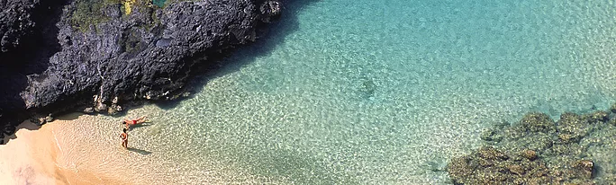
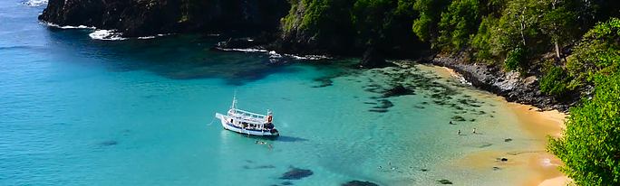
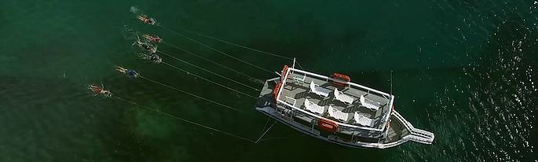
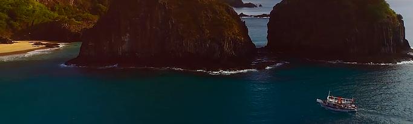
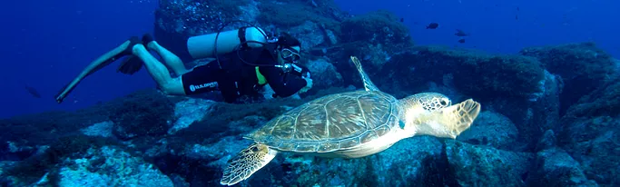
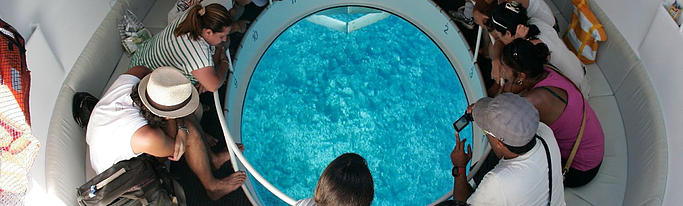

IlhaTour
Passeio em veículo 4x4 com duração de aproximadamente 08 horas. O tour passa pelas principais praias e pontos turísticos de Noronha. Parada para banho e snorkeling em algumas praias e uma parada para o almoço (não incluso.) O passeio se encerra no por-do-sol. É recomendado o uso de tênis, chapéus ou bonés, protetor solar e aluguel de equipamento de mergulho (snorkel, máscara, nadadeiras).
PASSEIO DE BARCO
PASSEIO DE BARCO Saída de Barco partindo do Porto de Santo Antônio com roteiro passando pelas ilhas secundárias, o Morro Dois Irmãos na praia da Cacimba do Padre, navegando pela Baía dos Golfinhos até o ponto mais extremo da ilha: a Ponta da Sapata. No retorno há uma parada para banho na Baía do Sancho. Temos passeios com e sem almoço inclusos e também com mergulho a reboque. Durante esse passeio é muito comum ver os golfinhos acompanhando a embarcação. A duração do passeio é de 3 horas. Saídas pelas manhã (08:00hs - 11:00hs). No passeio é oferecido serviço de bar com água, refrigerantes e cervejas (não inclusos no valor).
TRILHAS

Noronha oferece diversas opções de trilhas, com vários níveis de dificuldade e com beleza impressionante. Passeios que levam a praias, mirantes e piscinas naturais, que encantam a todos os gostos. Grande parte das trilhas oferece um nível de dificuldade um pouco mais alto devido ao relevo da ilha e o sol forte. É muito importante que o visitante sempre leve consigo bastante água e protetor solar, além de chapéus e bonés. Algumas trilhas exigem a presença de um guia pois estão inseridas dentro da área do Parque Nacional Marinho, seguindo as regras do IBAMA. Outras trilhas estão dentro da Área de Proteção Ambiental (APA) e por isso podem ser visitadas sem a necessidade de um guia credenciado, como por exemplo a trilha do Jardim Elizabeth, Costa Azul e Costa Esmeralda. Veja no botão abaixo todas as trilhas que temos em Fernando de Noronha.
MERGULHO A REBOQUE (PLANASUB)
O mergulho a reboque é realizado com o mergulhador sendo puxado pela embarcação, segurando numa pranchinha atada a uma corda. Utilizando o snorkel e a máscara é possível visualizar a vida marinha enquanto segue o percurso. Para este passeios é importante levar boné, óculos de sol e protetor solar para quando estiver no barco.
ENTARDECER VIP
Passeio de Barco até o morro Dois Irmãos, com peixe e petiscos à bordo, parada para banho na Praia da Conceição para assistir ao espetáculo do Pôr do Sol. Também é possível fazer o mergulho a reboque neste passeio e o equipamento básico de mergulho está incluso.
MERGULHO AUTÔNOMO
Com mais de 25 pontos de mergulho, temperatura média da água por volta de 27o C e visibilidade na casa dos 25 metros, temos bom mergulho durante todo o ano, mudando entre Mar de Dentro (face da ilha voltada ao continente) e Mar de Fora (face da ilha voltada ao Oceano). Noronha é considerada um dos melhores locais para mergulho no Brasil e no mundo. Vida marinha abundante, corais multicoloridos e uma grande variedade de espécies fazem o mergulho em Noronha ser uma aventura incrível. Para mergulhadores certificados ou para a primeira experiência, todos podem desfrutar das maravilhas subaquáticas de Fernando de Noronha. O passeio se inicia com o transfer da Pousada ao Porto no horário confirmado (manhã ou tarde). O carro levará todos os mergulhadores até o porto e os guiará até o embarque. Após apresentar sua carteirinha do Parque Nacional Marinho ao fiscal da EcoNoronha e confirmar o seu mergulho com o guia, você será levado até o barco. Para os mergulhadores certificados será dada uma breve palestra sobre o perfil do mergulho e procedimentos de segurança, além do suporte para aparamentamento. Para os iniciantes a palestra será sobre o funcionamento dos equipamentos, flutuabilidade e conceitos básicos de segurança para o mergulho. Os mergulhadores certificados serão levados em grupos de 04 pessoas por 01 instrutor/guia e os iniciantes terão um instrutor por pessoa exclusivamente, durante todo o mergulho. As embarcações são divididas entre Certificados e Não-certificados para que possam desfrutar de pontos que atendam a sua experiência e seguindo os padrões internacionais de segurança. Após o mergulho há alguns lanches e bebidas para se refrescar enquanto navega de volta ao porto. Após desembarcar, o transporte estará pronto para levá-los de volta à sua Pousada.
PROJETO NAVI
A NAVI é uma hidro nave projetada para abrigar a maior lente de visão subaquática do mundo. Através dessa lente é possível visualizar a vida marinha durante o passeio. Com total segurança, sem se molhar e acessível para todas as idades.
FERNANDO DE NORONHA
Rua São Miguel, 637
Bosque Flamboyant
Vila dos Remedios
Fernando de Noronha / PE - Brasil
CEP: 53990-000
Telefone: (81) 3619-1134
E-mail: info@noronhatour.com.br
Aberto diariamente das 07:30hs às 20:30hs
Plantão: (81) 9 9517 0048
NATAL - CENTRAL DE RESERVAS
(84) 3206-8840 / 3206-8841
Segunda a Sexta - 08 às 18hs
Sábado - 08 às12hs.